基础知识
JS框架——在一个HTML文件中常常需要用到javascript执行逻辑语句，自写JS框架的简单案例
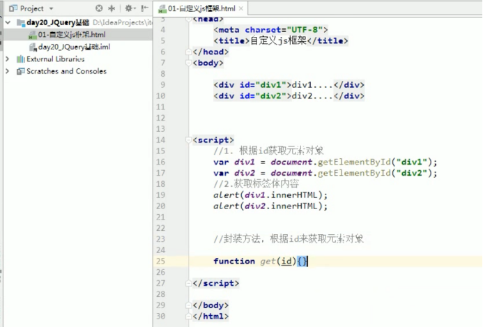
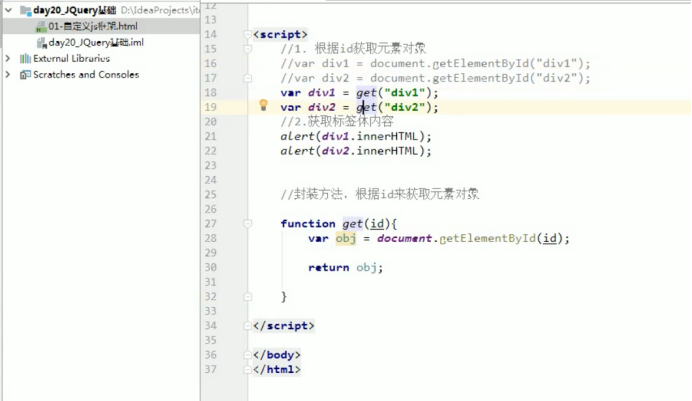
剪切你的js方法，新建一个js文件夹到src目录下，在js文件夹中新建一个js的文件用来存放你的js代码
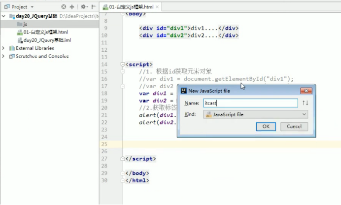
简化了HTML的代码，只需要在HTML中引用js文件即可
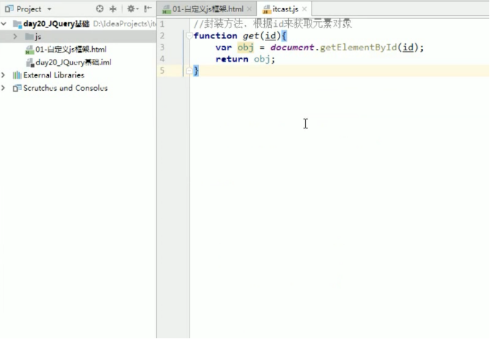
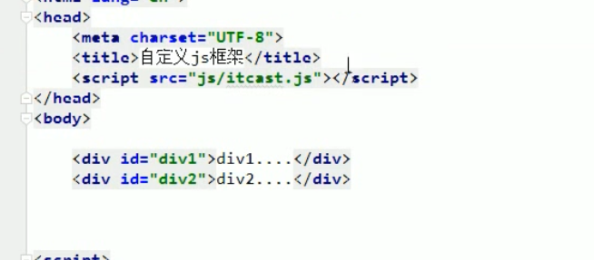
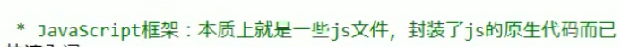
JQuery——是一个快速简洁的JavScript框架，可以优化HTML文档，
事件处理，动画设计和Ajax交互。因此，JQuery中其实是封装了非常多的工具，我们直接使用就可以了，十分方便。使用方法如下
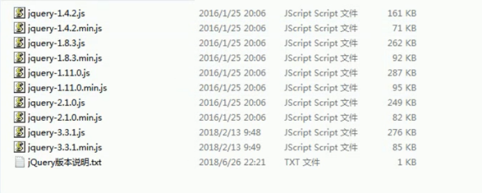
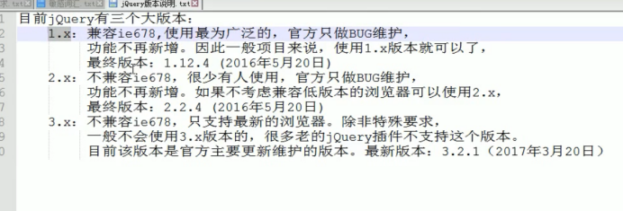
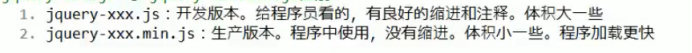
所以使用的时候一般导入min版本
使用时放入js文件夹下即可
写法上为，后面就可以直接调用了，查看JQuery语法即可
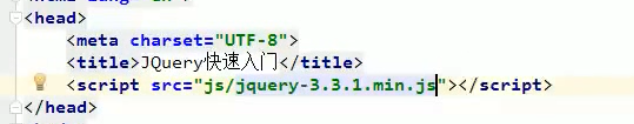
吧
JDBC——（Java Date Base Connectivity）Java连接数据库的简称，JDBC API是由Java语言编程的类和接口组成，可以用于执行SQL语句访问多种关系数据库，开发人员只需要编写一次就可以访问各种数据库。
Servlet在Java代码中通过HttpServletResponse对象动态输出HTML内容
JSP在静态HTML内容中嵌入Java代码，Java代码被动态执行后生成HTML内容
Servlet能够很好地组织业务逻辑代码，但是在Java源文件中通过字符串拼接的方式生成动态HTML内容会导致代码维护困难、可读性差 JSP虽然规避了Servlet在生成HTML内容方面的劣势，但是在HTML中混入大量、复杂的业务逻辑同样也是不可取的
MVC模式（Model-View-Controller）是软件工程的一种软件框架，系统分为三个基本部分：模型（Model）、视图（View）和控制器（Controller）： Controller——负责转发请求，对请求进行处理 View——负责界面显示 Model——业务功能编写（例如算法实现）、数据库设计以及数据存取操作实现 在JSP/Servlet开发的软件系统中，比如StudentMS项目里的UserDao文件就是一个模型/模板，按照这个模板我们做了UserDao_Implement这个实现类，
DAO层： DAO层叫数据访问层，全称为data access object，属于一种比较底层，比较基础的操作，具体到对于某个表的增删改查，也就是说某个DAO一定是和数据库的某一张表一一对应的，其中封装了增删改查基本操作，建议DAO只做原子操作，增删改查。 Service层：
Service层叫服务层，被称为服务，粗略的理解就是对一个或多个DAO进行的再次封装，封装成一个服务，所以这里也就不会是一个原子操作了，需要事物控制。
Controler层： Controler负责请求转发，接受页面过来的参数，传给Service处理，接到返回值，再传给页面。 总结： 个人理解DAO面向表，Service面向业务。后端开发时先数据库设计出所有表，然后对每一张表设计出DAO层，然后根据具体的业务逻辑进一步封装DAO层成一个Service层，对外提供成一个服务。
C/S和B/S
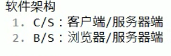
Web资源的分类：静态资源/动态资源
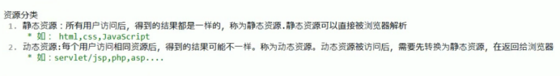
B/S交互的概念图
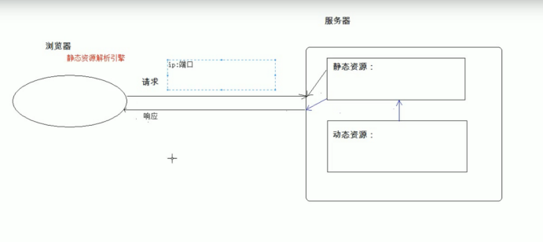
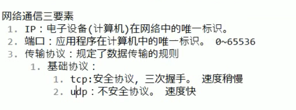
Web服务器软件
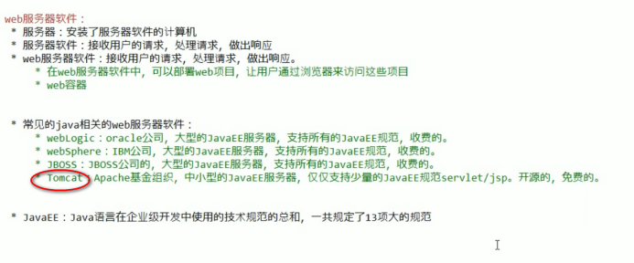
Tomcat软件
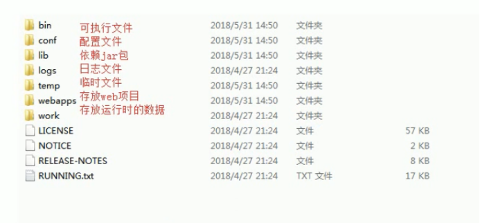
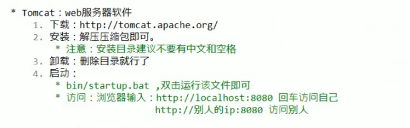
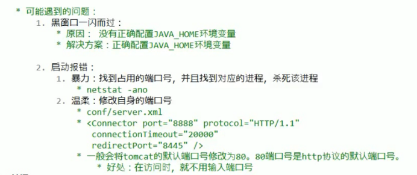
先说明：配置环境变量不是必须的，但是比较稳定，先是用第二种不配置的方法
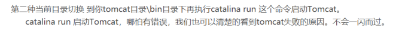
第一种配置环境变量，打开计算机属性点击更改设置
右击“我的电脑”>>选择“属性”>>单击左侧栏“高级系统设置”>>“高级”>>“环境变量”
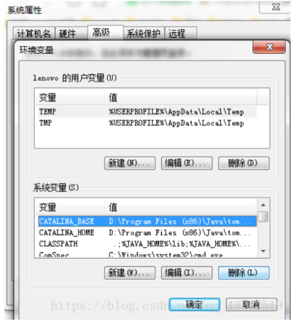
下面就要在系统变量这一栏里，配置Tomcat的环境变量了：
1.新建CATALINA_BASE变量
变量名：CATALINA_BASE
变量值：D:\Program Files (x86)\Java\tomcat-8.5.33
（填Tomcat的安装位置,免安装版的就是其解压位置）
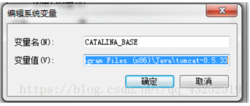
2.新建CATALINA_HOME变量
变量名：CATALINA_HOME
变量值：D:\Program Files (x86)\Java\tomcat-8.5.33
（填Tomcat的安装位置,免安装版的就是其解压位置）
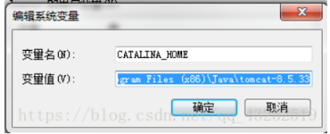
3.找到Path变量，点击编辑
变量名：Path
变量值：直接复制，添加在原变量值的末尾 ;%CATALINA_HOME%\bin;%CATALINA_HOME%\lib
（注意，前面的那个分号是用来和原有的变量值隔开的，如果原来有的话，就不用写了）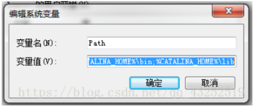
一闪而过是由于你的JAVA_HOME这个环境变量没有配置好，你需要添加自己jdk的位置
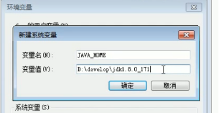
先新建一个系统变量为JAVA_HOME，然后填上你的jdk的地址，确定
然后再在Path变量中点击添加或者在值的末尾加上%JAVA_HOME%，确定，配置完成
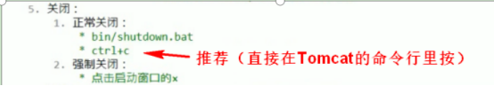
正常Tomcat是在我们做项目的时候调用开启的，所以不必每次都去找它打开关闭。
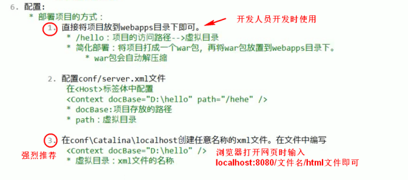
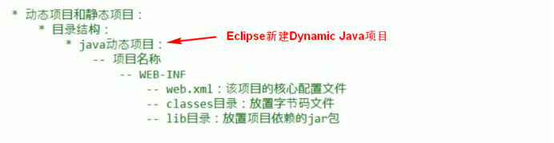
Servlet，使用前记得检查添加servlet-api.jar，并点击构建路径
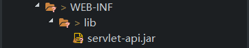
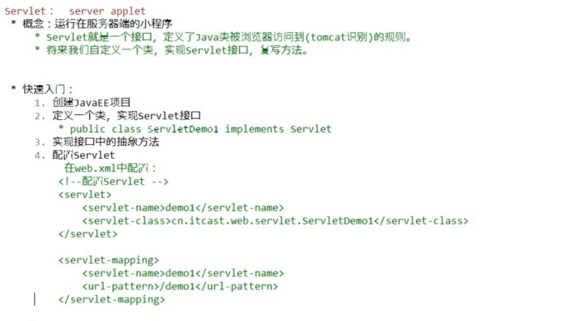
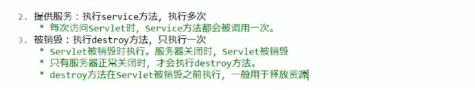
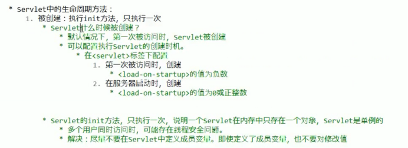
由于通过web.xml配置Servlet十分麻烦，所以推荐使用Servlet3.0
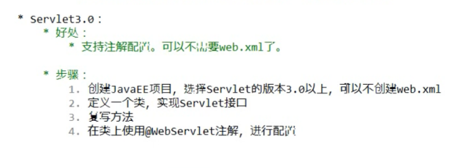
SSM架构
MVC架构
Jsp
Java Swing
Java SWT
第一步：基础环境搭建
JDK 1.7（安装Java）
Eclipse MySQL navicat
http://programmer.ischoolbar.com/index.php/article/article/id/9.html
Eclipse配置tomcat
http://programmer.ischoolbar.com/index.php/article/article/id/10.html
Tomact在Eclipse中可正常启动但是不能打开网页的解决方法
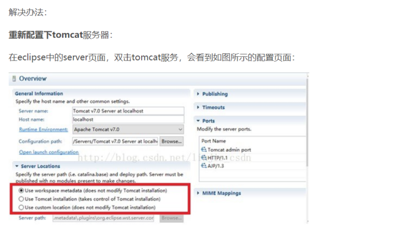
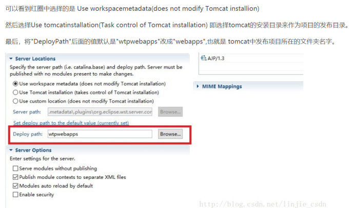
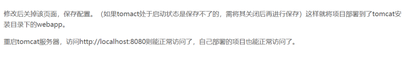

Navicat连接MySQL
http://programmer.ischoolbar.com/index.php/article/article/id/97.html
关于安装MySQL：建议你使用xampp.exe一键集成工具安装，因为用MySQL的安装包安装十分麻烦
安装windowbuiler
https://www.eclipse.org/windowbuilder/download.php
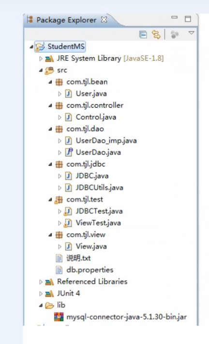
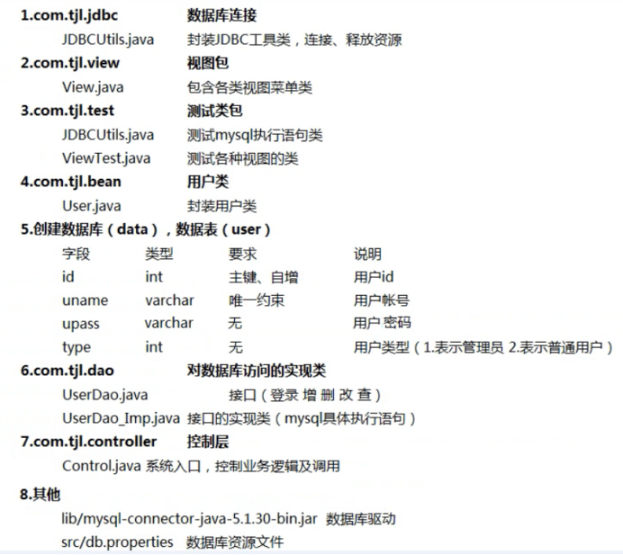
db.properties是一个封装用的资源文件，文件内容为键值对构成的集合，写法上要注意，例如：driver=com.mysql.jdbc.Driver，等号两边不能加空格，结尾也没有分号，一组键值对一行，注意不需要双引号，配置文件里不能写注释，因为不支持中文
读取db.properties文件的时候需要用字节流格式导入到代码里，写法在JDBCUtils.java里